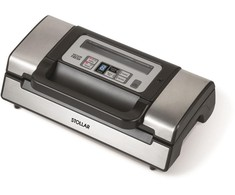

Vakuumavimo aparatai | Vakuumatoriai - Topocentras Vakuumatoriai. Prekių puslapyje. 12 12 24 36 48 Prekių filtras Rikiuoti pagal: Rikiuoti Kaina, nuo žemiausios. Nuo A iki Z Nuo Z iki A Kaina, nuo žemiausios Kaina, nuo aukščiausios Rikiuoti pagal: Rikiuoti Kaina, nuo žemiausios.
Vakumatoriai ir jų priedai | Vakumatorius.lt Vakuumatoriai yra profesionalūs prietaisai, kurių dėka visas oras yra greitai pašalinamas iš specialiai šiems prietaisams sukurtų ir pritaikytų maišų. Prietaiso tikslas – padėti Jums sukurti sąlygas gamyboje naudojamus produktus išlaikyti ilgiau šviežiais
vakuumatorius, vakumatorius, vakuumatoriai Vakumavimo aparatai ir jų priedai maisto vakumavimui namuose. Specializuota vakuumatorių parduotuvė. Vakumatoriai ir maišeliai vakuumavimui. Namams skirti vakumatoriai. Kreipkitės ir visada pasistengsime padėti rasti jums tinkamiausius vakumavimo sprendimus.
Vakuumatoriai - Virtuvės technika - Virtuvė ir namai Ieškote kompiuterio, planšetės ar virtualios realybės akinių? TOPO CENTRAS naujausia kompiuterinę techniką už prieinamą kainą. Rinkitės pažangias technologijas!
Maisto vakuumatoriai | ZEMAKAINA.LT Maisto vakuumatoriai internetu el. parduotuvėje ZemaKaina.lt – greita ir patogu pirkti. Jei norite įsigyti maisto vakuumatorių, siūlome pasitikėti mumis ir rinktis iš plataus mūsų el. parduotuvės asortimento. Išsirinkite norimą prekę, apmokėkite patogiausiu Jums būdu ir laukite, kol pristatysime pirkinį per 1–2 darbo dienas ...
Vakuumatoriai | Įranga restoranams Specialūs pasiūlymai maisto vakuumatoriams! Pirmoji specializuota vakuumatorių parduotuvė Baltijos šalyse. Maisto vakuumavimo apartai su nuolaida, gera kaina, profesionalų patarimai ir kokybė. Akcija maisto vakuumatoriams su maišeliais.Vakumatoriai maistą išlaikys 6 kartus ilgiau šviežią ir skanų.
Maisto vakuumatoriai namams |plačiausias pasirinkimas ... Profesionalioms virtuvėms skirti vakuumatoriai padės ilgiau išlaikyti produktus šviežius ir išsaugos jų maistines savybes. Mūsų asortimente – įvairaus dydžio ir galingumo vakuumatoriai, pagaminti iš kokybiško nerūdijančio plieno, todėl itin tvirti ir patvarūs.
Vakuumatoriai
2020.10.29 13:03

Visos kategorijos
Buitinė technika
Buitinė technika
Šaldytuvai
Šaldytuvai
Šaldytuvai su šaldikliu apačioje Šaldytuvai su šaldikliu viršuje Šaldytuvai be šaldiklio Šaldytuvai Side-by-Side Vyno ir cigarų šaldytuvai Įmontuojami šaldytuvai ir šaldikliai Profesionali šaldymo ir brandinimo įranga Šaldikliai ir šaldymo dėžės Visi šaldytuvai Visi šaldytuvai ir šaldikliai Šaldymo įrangos priedai Nešiojami ir automobiliniai šaldytuvai Šaldikliai ir šaldymo dėžės
Šaldikliai ir šaldymo dėžės
Skalbimo mašinos
Skalbimo mašinos
Skalbimo mašinos Skalbimo mašinos su džiovykle Džiovyklės Visos skalbimo mašinos ir džiovyklės Skalbimo mašinų priedai Džiovyklės
Džiovyklės
Džiovyklės Skalbyklės-džiovyklės Viryklės
Viryklės
Elektrinės viryklės Dujinės viryklės su elektrine orkaite Dujinės viryklės su dujine orkaite Mini viryklės ir orkaitės Viryklių priedai Orkaitės
Orkaitės
Kaitlentės
Kaitlentės
Indukcinės kaitlentės Elektrinės kaitlentės Dujinės kaitlentės Kombinuotos ir Wok kaitlentės Indaplovės
Indaplovės
Indaplovės įmontuojamos Indaplovės laisvai pastatomos Visos indaplovės Indaplovių priedai Gartraukiai
Gartraukiai
Įmontuojami gartraukiai Gartraukiai tvirtinami prie sienos Gartraukiai tvirtinami prie lubų Gartraukiai pakabinami po spintele Gartraukių priedai Mikrobangų krosnelės
Virduliai Sumuštinių keptuvės Garų puodai Daugiafunkciniai puodai Elektriniai griliai Gruzdintuvės (fritiūrinės) Vaflinės, blynų ir spurgų keptuvės Skrudintuvai Spragėsių, cukraus vatos, smagaus maisto aparatai Duonkepės Mini orkaitės Mikrobangės krosnelės Mini viryklės Kiaušinių virtuvai Virtuvės ir stalo reikmenys
Virtuvės ir stalo reikmenys
Keptuvės Puodai ir greitpuodžiai Virtuvės įrankiai Gertuvės, termosai, termo puodeliai Kita virtuvės technika
Kita virtuvės technika
Vaisių džiovintuvai Termosai Vandens filtrai ir jonizatoriai Maisto atliekų smulkintuvai Vakuumatoriai ir vakuumavimo reikmenys Asmens ir namų priežiūra
Lygintuvai Lyginimo sistemos Lyginimo lentos Siuvimo mašinos
Siuvimo mašinos
Pūkų surinkėjai
Pūkų surinkėjai
Svarstyklės
Svarstyklės
Klimato kontrolės technika
Klimato kontrolės technika
Šildytuvai ir radiatoriai Šildomos antklodės, kojų šildytuvai Rankų džiovintuvai Ventiliatoriai Kondicionieriai ir vėsintuvai Oro drėkintuvai Oro valytuvai (jonizatoriai) Oro sausintuvai (drėgmės surinkėjai) Orų stotelės (drėgmės matuokliai) Magnetinio lauko, radiacijos, nitratų matuokliai Klimato kontrolės prietaisų priedai Kūno priežiūros priemonės
Kūno priežiūros priemonės
Barzdaskutės ir barzdakirpės Barzdaskučių priedai Epiliatoriai Nosies plaukų kirpimo mašinėlės Manikiūro ir pedikiūro priemonės Šildomos antklodės, kojų šildytuvai Dantų šepetėliai ir irigatoriai Kraujospūdžio matuokliai Plaukų priežiūros priemonės
Spausdintuvai Daugiafunkciniai spausdintuvai Skeneriai Dokumentų naikikliai Spausdintuvų kasetės Popierius Kompiuterių aksesuarai
Kompiuterių aksesuarai
Klaviatūros Pelės Kilimėliai Ausinės Kolonėlės Internetinės ir IP kameros Krepšiai, dėklai ir kuprinės Laidai Jungčių stotelės, stovai, aušintuvai Nepertraukiamo maitinimo šaltiniai (UPS) Išorinės baterijos (power bank) Nešiojamų kompiuterių įkrovikliai (pakrovėjai) Kortelių skaitytuvai, USB šakotuvai Tinklo įranga
Tinklo įranga
Maršrutizatoriai Bevielio tinklo (Wi-Fi) adapteriai Komutatoriai Išorinės duomenų laikmenos
Išorinės duomenų laikmenos
USB atmintinės Išoriniai kietieji diskai (HDD) Atminties kortelės CD/DVD/BD/MC laikmenos Programinė įranga
Programinė įranga
Operacinės sistemos Antivirusinės programos Biuro programos Kompiuterių komponentai
Kompaktiniai fotoaparatai Sisteminiai fotoaparatai Momentiniai fotoaparatai Vaizdo kameros ir registratoriai
Vaizdo kameros ir registratoriai
Vaizdo kameros Veiksmo kameros Vaizdo registratoriai Foto ir video aksesuarai
Foto ir video aksesuarai
Fotoaparatų objektyvai ir jų priedai Fotoaparatų baterijos ir įkrovikliai Vaizdo kamerų baterijos ir įkrovikliai Dėklai, krepšiai fotoaparatams ir objektyvams Laikmenos
Laikmenos
Atminties kortelės Video-audio juostos ir kitos laikmenos Baterijos, akumuliatoriai, įkrovikliai
Baterijos, akumuliatoriai, įkrovikliai
Baterijos USB įkrovikliai (pakrovėjai) Išorinės baterijos (power bank) Telefonai ir navigacija
Telefonai ir navigacija
Mobilieji telefonai
Mobilieji telefonai
Išmanieji telefonai Mygtukiniai telefonai Fiksuoto ryšio telefonai
Fiksuoto ryšio telefonai
Mobilių telefonų priedai
Mobilių telefonų priedai
Laisvų rankų įranga Telefonų įkrovikliai Telefonų dėklai Telefonų laikikliai Ekrano apsauga Atminties kortelės Selfie lazdos Mobiliųjų telefonų kolonėlės Išorinės baterijos (power bank) Išmanieji laikrodžiai ir apyrankės
Išmanieji laikrodžiai ir apyrankės
GPS navigacija
GPS navigacija
GPS navigacija transportui Vaizdo registratoriai Echolotai
Echolotai
Laisvalaikis ir pramogos
Laisvalaikis ir pramogos
Žaidimų kompiuterių priedai
Žaidimų kompiuterių priedai
Žaidimų kėdės ir stalai Dronai/Robotai
Dronai/Robotai
Žvejybos reikmenys
Žvejybos reikmenys
Paspirtukai
Paspirtukai
Turizmas
Turizmas
Miegmaišiai Palapinės Išmanieji laikrodžiai
Išmanieji laikrodžiai
Išmanioji sodininkystė
Išmanioji sodininkystė
Hamakai ir pakabinami krėslai
Hamakai ir pakabinami krėslai
Gyvūnų prekės
Gyvūnų prekės
Sporto prekės
Sporto prekės
Miele parduotuvė
Miele parduotuvė
Vertinimas 4.6 iš 5 | Viso 1221 Pagalba 8 700 80055 Vertinimas 4.6 iš 5 | Viso 1223 Prisijungti Buitinė technika Smulki virtuvės technika Asmens ir namų priežiūra Vaizdo ir garso technika Kompiuterinė technika Fototechnika, vaizdo kameros Telefonai ir navigacija Laisvalaikis ir pramogos Parduotuvė Šaldytuvai Šaldytuvai su šaldikliu apačioje Šaldytuvai su šaldikliu viršuje Šaldytuvai be šaldiklio Šaldytuvai Side-by-Side Vyno ir cigarų šaldytuvai Įmontuojami šaldytuvai ir šaldikliai Profesionali šaldymo ir brandinimo įranga Šaldikliai ir šaldymo dėžės Visi šaldytuvai Visi šaldytuvai ir šaldikliai Šaldymo įrangos priedai Nešiojami ir automobiliniai šaldytuvai Šaldikliai ir šaldymo dėžės Skalbimo mašinos Skalbimo mašinos Skalbimo mašinos su džiovykle Džiovyklės Visos skalbimo mašinos ir džiovyklės Skalbimo mašinų priedai Džiovyklės Džiovyklės Skalbyklės-džiovyklės Viryklės Elektrinės viryklės Dujinės viryklės su elektrine orkaite Dujinės viryklės su dujine orkaite Mini viryklės ir orkaitės Viryklių priedai Orkaitės Kaitlentės Indukcinės kaitlentės Elektrinės kaitlentės Dujinės kaitlentės Kombinuotos ir Wok kaitlentės Indaplovės Indaplovės įmontuojamos Indaplovės laisvai pastatomos Visos indaplovės Indaplovių priedai Gartraukiai Įmontuojami gartraukiai Gartraukiai tvirtinami prie sienos Gartraukiai tvirtinami prie lubų Gartraukiai pakabinami po spintele Gartraukių priedai Mikrobangų krosnelės Mikrobangų krosnelės Mikrobangų krosnelių priedai Įmontuojama technika Įmontuojami šaldytuvai Įmontuojamos indaplovės Įmontuojamos orkaitės Įmontuojamos kaitlentės Įmontuojami kavos aparatai Įmontuojamos mikrobangų krosnelės Įmontuojami gartraukiai Indų pašildymo stalčiai Kavos ir karštų gėrimų aparatai Kavos aparatai Kava Kavamalės Pieno plakikliai Arbatos aparatai Kavos aparatų priedai Maisto ruošimo ir smulkinimo technika Sulčiaspaudės Virtuviniai kombainai Virtuvinių kombainų priedai Mėsmalės Pjaustyklės Blenderiai (trintuvai) Mikseriai (plakikliai) Kokteilinės Peilių galąstuvai Virtuvinės svarstyklės Ledų, ledukų, jogurto aparatai Virimo ir kepimo technika Virduliai Sumuštinių keptuvės Garų puodai Daugiafunkciniai puodai Elektriniai griliai Gruzdintuvės (fritiūrinės) Vaflinės, blynų ir spurgų keptuvės Skrudintuvai Spragėsių, cukraus vatos, smagaus maisto aparatai Duonkepės Mini orkaitės Mikrobangės krosnelės Mini viryklės Kiaušinių virtuvai Virtuvės ir stalo reikmenys Keptuvės Puodai ir greitpuodžiai Virtuvės įrankiai Gertuvės, termosai, termo puodeliai Kita virtuvės technika Vaisių džiovintuvai Termosai Vandens filtrai ir jonizatoriai Maisto atliekų smulkintuvai Vakuumatoriai ir vakuumavimo reikmenys Valymo technika Dulkių siurbliai Dulkių siurbliai robotai Dulkių siurbliai-šluotos Rankiniai dulkių siurbliai Dulkių siurblių priedai Langų valymo prietaisai Batų valymo mašinos Gariniai valytuvai Lygintuvai (laidynės) Lygintuvai Lyginimo sistemos Lyginimo lentos Siuvimo mašinos Pūkų surinkėjai Svarstyklės Klimato kontrolės technika Šildytuvai ir radiatoriai Šildomos antklodės, kojų šildytuvai Rankų džiovintuvai Ventiliatoriai Kondicionieriai ir vėsintuvai Oro drėkintuvai Oro valytuvai (jonizatoriai) Oro sausintuvai (drėgmės surinkėjai) Orų stotelės (drėgmės matuokliai) Magnetinio lauko, radiacijos, nitratų matuokliai Klimato kontrolės prietaisų priedai Kūno priežiūros priemonės Barzdaskutės ir barzdakirpės Barzdaskučių priedai Epiliatoriai Nosies plaukų kirpimo mašinėlės Manikiūro ir pedikiūro priemonės Šildomos antklodės, kojų šildytuvai Dantų šepetėliai ir irigatoriai Kraujospūdžio matuokliai Plaukų priežiūros priemonės Plaukų džiovintuvai Plaukų džiovintuvų priedai Plaukų formavimo prietaisai Plaukų kirpimo mašinėlės Plaukų kirpimo mašinėlių priedai Šukos, šepečiai ir veidrodžiai Plaukų kirpimo žirklės, skustuvai Dantų šepetėliai ir irigatoriai Dantų šepetėliai Tarpdančių irigatoriai Dantų šepetėlių antgaliai ir priedai Buitinė chemija, valymo priemonės Priešgaisrinė sauga Dūmų, smalkių, dujų detektoriai Gesintuvai, nedegūs audeklai ir kt. Apsaugos sistemos Vaizdo stebėjimo kameros Vaizdo įrašymo įrenginiai Davikliai ir apsaugos sistemų priedai Sveikatos apsaugos priemonės Gyvūnų prekės Kirpimo mašinėlės gyvūnams Gyvūnų reikmenys Televizoriai Televizorių priedai Televizorių laikikliai Skaitmeniniai TV imtuvai (priedėliai) SMART TV priedai Nuotolinio valdymo pultai TV antenos ir jų priedai Namų kino sistemos Projektoriai Projektoriai Projektorių ekranai Projektorių laikikliai Media grotuvai Blu-Ray grotuvai DVD grotuvai Garso technika Ausinės Kolonėlės Diktofonai Muzikiniai centrai Magnetolos Radijo imtuvai ir žadintuvai Patefonai MP3/MP4 grotuvai Namų kino sistema Auto aparatūra Automagnetolos Automobiliniai garsiakalbiai Vaizdo registratoriai FM moduliatoriai Hi-Fi garso aparatūra Plokštelių grotuvai (patefonai) Hi-Fi garso kolonėlės Kabeliai ir adapteriai Vaizdo kabeliai USB kabeliai Tinklo kabeliai Adapteriai Laikikliai, stovai, staliukai Televizorių laikikliai Projektorių laikikliai Kolonėlių laikikliai Visi laikikliai Kompiuteriai Stacionarūs kompiuteriai Nešiojami kompiuteriai Planšetės Elektroninės skaityklės Nešiojami kompiuteriai Planšetiniai kompiuteriai Knygų skaityklės Stacionarūs kompiuteriai Monitoriai Biuro technika ir reikmenys Spausdintuvai Daugiafunkciniai spausdintuvai Skeneriai Dokumentų naikikliai Spausdintuvų kasetės Popierius Kompiuterių aksesuarai Klaviatūros Pelės Kilimėliai Ausinės Kolonėlės Internetinės ir IP kameros Krepšiai, dėklai ir kuprinės Laidai Jungčių stotelės, stovai, aušintuvai Nepertraukiamo maitinimo šaltiniai (UPS) Išorinės baterijos (power bank) Nešiojamų kompiuterių įkrovikliai (pakrovėjai) Kortelių skaitytuvai, USB šakotuvai Tinklo įranga Maršrutizatoriai Bevielio tinklo (Wi-Fi) adapteriai Komutatoriai Išorinės duomenų laikmenos USB atmintinės Išoriniai kietieji diskai (HDD) Atminties kortelės CD/DVD/BD/MC laikmenos Programinė įranga Operacinės sistemos Antivirusinės programos Biuro programos Kompiuterių komponentai Maitinimo blokai (PSU) Vidiniai standieji diskai (HDD) SSD diskai Projektoriai Projektoriai Projektorių ekranai Projektorių laikikliai Priedai Kabeliai ir adapteriai Vaizdo ir garso kabeliai LAN kabeliai USB kabeliai Adapteriai Elektros kabeliai, prailgintojai, adapteriai Spausdintuvų kasetės Originalūs toneriai Neoriginalūs toneriai Originalios rašalo kasetės Neoriginalios rašalo kasetės Fotoaparatai Kompaktiniai fotoaparatai Sisteminiai fotoaparatai Momentiniai fotoaparatai Vaizdo kameros ir registratoriai Vaizdo kameros Veiksmo kameros Vaizdo registratoriai Foto ir video aksesuarai Fotoaparatų objektyvai ir jų priedai Fotoaparatų baterijos ir įkrovikliai Vaizdo kamerų baterijos ir įkrovikliai Dėklai, krepšiai fotoaparatams ir objektyvams Laikmenos Atminties kortelės Video-audio juostos ir kitos laikmenos Baterijos, akumuliatoriai, įkrovikliai Baterijos USB įkrovikliai (pakrovėjai) Išorinės baterijos (power bank) Mobilieji telefonai Išmanieji telefonai Mygtukiniai telefonai Fiksuoto ryšio telefonai Mobilių telefonų priedai Laisvų rankų įranga Telefonų įkrovikliai Telefonų dėklai Telefonų laikikliai Ekrano apsauga Atminties kortelės Selfie lazdos Mobiliųjų telefonų kolonėlės Išorinės baterijos (power bank) Išmanieji laikrodžiai ir apyrankės GPS navigacija GPS navigacija transportui Vaizdo registratoriai Echolotai Žaidimų kompiuterių priedai Žaidimų kėdės ir stalai Dronai/Robotai Žvejybos reikmenys Paspirtukai Turizmas Miegmaišiai Palapinės Išmanieji laikrodžiai Išmanioji sodininkystė Hamakai ir pakabinami krėslai Gyvūnų prekės Sporto prekės 2 Ogmina Smulki virtuvės technika Kita virtuvės technika Vakuumatoriai ir vakuumavimo reikmenys
Vakuumatoriai ir vakuumavimo reikmenys
Prekių filtravimas Kaina 7 € 787 € Gamintojas Valyti visus filtrus LAVA (7)